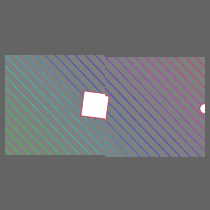
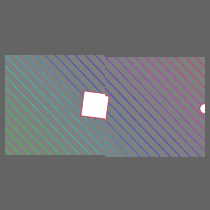

p5.layers

p5.layers is a p5.js library that simplifies some common use cases for p5.js Graphics objects.
It does this by addings this functionality to p5.js:
- A new pair of functions,
beginLayer()andendLayer(), handles variable-free creation and use of a Graphics. - The p5.js draw and other canvas functions (e.g.
rect(),fill()) operate either on the canvas, or on the current layer (p5.Graphics instance), depending on whether they are called between a call tobeginLayer()/endLayer().
 

You can find a collection of examples here.
For example:
// with p5.layer
function draw() {
// ...
beginLayer();
background(100);
fill('blue');
circle(width / 2, height / 2, 100);
endLayer();
}
is equivalent to:
// without p5.layer
function setup() {
// ...
let pg = createGraphics(100, 100);
}
function draw() {
// ...
pg.background(100);
pg.fill('blue');
pg.circle(pg.width / 2, pg.height / 2, 100);
image(pg, 0, 0);
}
The version with beginLayer() doesn't require the use of pg. as a prefix in
order to affect the created Graphics. This makes it easier to change your mind
about what goes inside of a layer (or what happens in which of several layers),
and to write functions that can apply to either the canvas and or a layer.
The Graphics instances that beginLayer() creates persist across calls to
draw(). For example, the following code, from
examples/lissajous/sketch.js, leaves a trail
of circles, because the layer is only partially erased (the second argument to
background() is a value that indicates partial opacity). It is drawn onto a
canvas that is completely erased each frame, as required by the other code in
the draw() function in that file.
beginLayer();
background(100, 10);
let x = map(sin(millis() / 500), -1, 1, 0, width);
let y = map(sin(millis() / 700), -1, 1, 0, height);
circle(x, y, 20);
endLayer();
The equivalent functionality, without using beginLayer() and endLayer(),
would require code that is distributed among setup(), draw(), and the global
context:
let pg;
function setup() {
// ...
pg = createGraphics(width, height);
}
function draw() {
// ...
pg.background(100, 10);
let x = map(sin(millis() / 500), -1, 1, 0, pg.width);
let y = map(sin(millis() / 700), -1, 1, 0, pg.height);
pg.circle(x, y, 20);
image(pg, 0, 0);
}
Installation Options
Option 1: Using a CDN
Use the online version by adding the following line to your HTML document:
<script src="https://unpkg.com/p5.layers@1"></script>
Option 2: Downloading the library file
Alternatively, download p5.layers.min.js from this repository. Include it in your HTML
document by adding this line, after the line that includes p5.js or
p5.min.js:
<script src="p5.layers.min.js"></script>
Option 3: Using p5-server
The p5-server command-line tool,
and the P5 Server Visual Studio Code
Extension,
will each infer this library from the presence of call to beginLayer() in a
JavaScript-only sketch (one without an HTML file).
Reference
beginLayer()
Sets the p5.js global functions background(), draw() etc. to render into the
specified layer. If no layer is specified, one is created.
Syntax:
beginLayer()beginLayer([width, height, [renderer]])
The first time this function is called, it creates an instance of p5.Graphics.
Subsequent calls return this instance. (If the arguments are omitted, the
Graphics is created at the canvas width and height.) On subsequent calls, the
width, height, and renderer arguments are ignored, and the
previously-created instance is used.
beginLayer() returns the Graphics.
beginLayer(key, [width, height, renderer])
This form can be used to create multiple layers. beginLayer() will create a
new layer for each distinct key. The special key value "new" always creates
a new layer.
beginLayer(graphics)
This form can be used to set global draw functions to render onto a Graphics
that was created by createGraphics().
endLayer()
Restores the global draw functions rect() etc. so that they operate on the
canvas again, instead of the Graphics created by or passed as an argument to
beginLayer(). This function also draws the Graphics onto the canvas – although
this behavior can be suppressed.
Syntax:
endLayer()
Restores the global draw functions, and draws the Graphics onto the canvas
unless the argument to enterGraphics() was a Graphics.
endLayer(x, y, [width, height])
Restores the global draw functions, and draws the Graphics onto the canvas.
endLayer(false)
Restores the global draw functions. Does not draw the Graphics onto the canvas.
Motivation
- My students in Creative Coding frequently wanted to use the equivalent of the Layers concept that is common in GUI painting and drawing programs. I found that this was a significant hurdle, both because of the terminology and the mechanics.
- Because the p5.Graphics functions are methods on the instance, changing code to operate on the canvas such that it instead operates p5.Graphics requires a significant amount of editing.
Caveats
- The code only works in global mode. It does not check whether it is running in global mode.
- The code does not validate its arguments, and does not use the p5.js Friendly Error System.
- The code has only been tested in modern browsers.
License
MIT